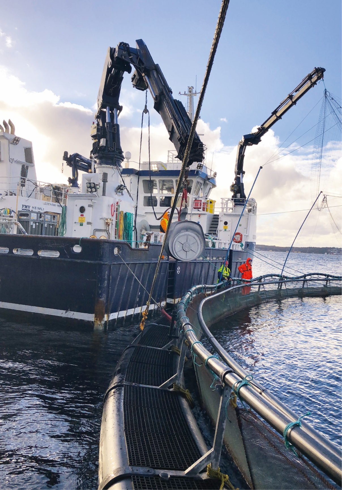

Seminar om:Fartøysoperasjoner, fiskevelferd og rammevilkårRederier, myndigheter og forvaltning ønsker endringer i regelverket for fartøy i havbruksnæringen. Men hvilke fokusområder som bør skjerpes inn på, er det er noe ulike meninger om. •••Av Linn Therese Skår Hosteland,
linn@kystrederiene.no
linn@kystrederiene.noDet kom frem under Kystrederiene og Brønnbåteiernes forening (BREF) sitt seminar om fartøysoperasjoner, fiskevelferd og rammevilkår, der over 70 mennesker fra næring, myndigheter og forvaltning møtte opp for felles innsikt i problem-stillingene fartøynæringene står overfor.Statssekretær Roy Angelvik (FrP) fra Nærings- og fiskeridepartementet innledet om deres tanker innen fiskevelferd og mulige fremtidige endringer i rammevilkår. Ett av hovedbudskapene til statssekretæren var at fiskeriministeren har en ambisjon om å lukke all brønnbåt-transport, begrunnet med at risikoen for sykdomssmitte fra fartøyene er høy. Denne problemstillingen er noe Kystrederiene og BREF nå arbeider med. Angelvik påpekte samtidig at brønnbåter, og servicebåtnæringen blir stadig viktigere for kystnorge.– Det utføres stadig større ope-rasjoner på merdkanten, og der-med trengs det dyktige fagfolk i bransjen. Næringen vet jeg er veldig gode til å ansette lærlinger. Det er fantastisk bra. Uten brønnbåter og servicebåter hadde ikke havbruks-næringen klart seg, sa Angelvik. Fartøysoperasjoner og smittehygieneJoar Gjerde som er daglig leder i medlemsrederiet Frøy Vest, re-presenterte servicebåtnæringen og hadde en gjennomgang av næringens operasjoner, samt presenterte fokus på fiskevelferd og rutiner i forhold til smittebegrensning.– En jeg kjenner har sagt at vasken tar 98 % av smittestoffet, og des-infisering tar resterende. Dette kommer fra en som har peiling, og jeg tror dette stemmer. Det sier litt om hvor viktig det er med godt renhold og ikke minst vasking. Kun desinfisering er ikke godt nok. Vasking må også gjøres, sa Gjerde.Børge Lorentzsen som er styre-medlem i BREF og driftsleder i Norsk Fisketransport, presenterte brønn-båtnæringen, den teknologiske utviklingen som har vært innen fartøyene, myndighetspålagte krav, rekruttering av norske sjømenn, og fokuset på fiskevelferd/hygiene-rutiner. Og for å sikre en god smittehygiene i havbruksnæringen var han klar på at man må ha fokus på dette i hele verdikjeden.– Smittebegrensning er en stor del av hverdagen til servicenæringen. For at vi fortsatt skal kunne produsere verdens beste laks, på en mest mulig effektiv måte, må sykdom og lus holdes på et minimalt nivå. Her er det viktig at ikke bare den etablerte brønnbåten, men også at ny teknologi og nye fartøystyper har det samme fokuset og rammevilkårene. Er ikke fokuset gjennomgående for alle, vil det gi utfordringer for både opp-dretterne og for leverandørene, sa Lorentzsen. Samhandling og risikovurderingerTorgun Gjefsen, veterinær og fagsjef i Salmon Group, talte fiskens sak. Hun var svært opptatt av samhandling mellom oppdretter og fartøy for best mulig fiskevelferd gjennom alle ope-rasjoner. Det å sette av tilstrekkelig tid for risikovurderinger før opera-sjoner, samt å følge opp uønskede hendelser i disse operasjonene, påpekte hun var viktig for å dra hav-bruksnæringen fremover.

Statssekretær Roy Angelvik, fra Nærings og Fiskeridepartementet var klar på at fartøyene i havbruksnæringen er helt nødvendig for en god produksjon.